Vision #1
If we are to develop a reliable and faster way to validate a fix without impacting the stability of
the live backend, then we need to start up the entire stack sandboxed.
Vision #2
If an instituition needs to keep its blockchain application private until the release, then it
needs its own sandboxed, isolated network for testing.
Vision #3
If we are to decentralize a blockchain network, then anyone should be able to run a node, in the
most affordable way possible.
Steps
- Understand Avalanche Consensus ☃️
- Understand Avalanche Platform and Subnet 🔺
- Understand what it takes to run an Avalanche node
- Formulate Day-1 user experience: set up a node
- Formulate Day-2 user experience: node operation
- Implement command-line interface for automation
News
- Avalanche node maintains chain states
- Higher uptime, more staking rewards
- c5.2xlarge instance >$3,000 (yearly cost)
- Spot instance ~$1,100
avalanche-ops can
automate all these!
What is Avalanche?
Overview
Avalanche ($AVAX)
- Mainnet launched in Sep 2020
- Supports Ethereum Virtual Machine (EVM)
- Novel Consensus Algorithm: Snowman
- Proof-of-Stake
- Fast and Scalable L1 (>2K EVM TPS)
- Reliable (no downtime, no reorg)
- Platform for deploying "Subnets"
Ava Labs
- Founded in 2020 by Emin Gün Sirer, ex-Cornell professor, the creator of the first p2p
cryptocurrency system in 2003, and Cornell PhDs
Ava Labs builds products and infrastructure that streamline the user experience for web3.
Avalanche Today
>3.6B requests (a day, July 2022) with ~80ms latency
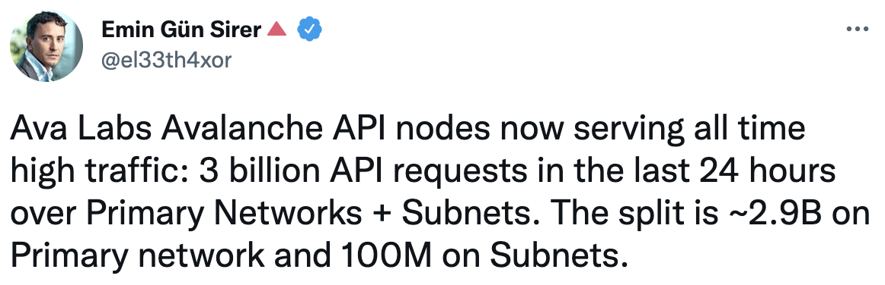
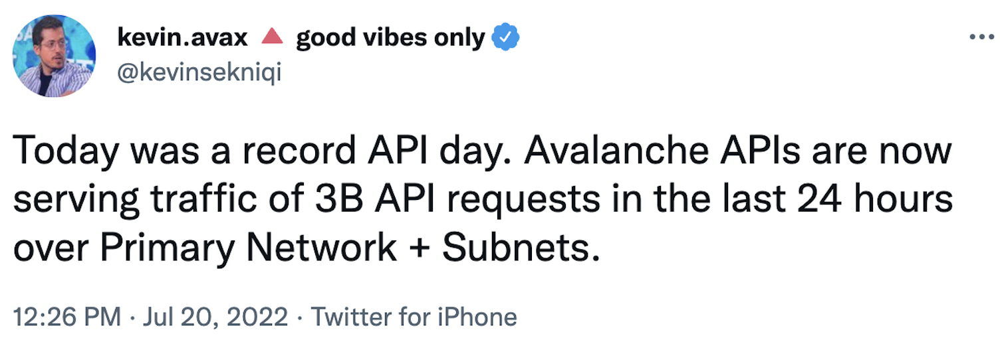
Horizontal Scale with Subnets
- Consensus with sub-second finality (Fast)
- Decentralized with >1,300 validators (Secure)
- Subnets for application specific chains (Isolation)
Avalanche Consensus ☃️
Snowman Protocol
Consensus
"Assume a collection of processes that can propose values. A consensus algorithm ensures that a
single one among the proposed values is chosen." Leslie Lamport, Paxos Made Simple
(2001)
Should this transaction be placed in a block or not?
PoW or PoS is NOT a consensus mechanism!
Consensus Until Now
Classical (Lamport 1998,
Paxos/Raft/etcd)
- Quick finality but does not scale
- Quadratic message complexity
- Permissioned, requires precise membership
Consensus Until Now
- Robust, no need for precise membership
- High latency, low throughput
- Wastes energy, not green, not sustainable
Avalanche Consensus Family
- Published in 2020
- Instant finality, low latency (~1 sec)
- High throughput (>1,500 TPS on EVM, 5K on X-chain)
- Scales >10-million nodes
- Robust, no need for precise membership
- Leaderless
- Quiescent, green, sustainable
- Inspired by epidemic protocols and gossip networks
- New idea: deliberately metastable
Avalanche Sustainability
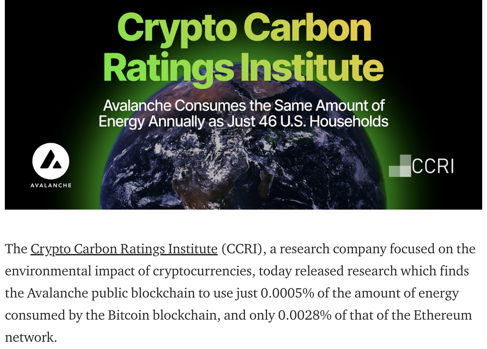
Binary Consensus
- Pick one red/blue -- no correct
answer
- Adopt the majority color by repeated sub-sampling
- Consensus results in the entire network agreeing on either red
or blue
- Even with 50/50 split, random perturbation in the sampling results in a single value being
selected
At the beginning, pick any color (no correct answer)
Radomly sub-sample the network
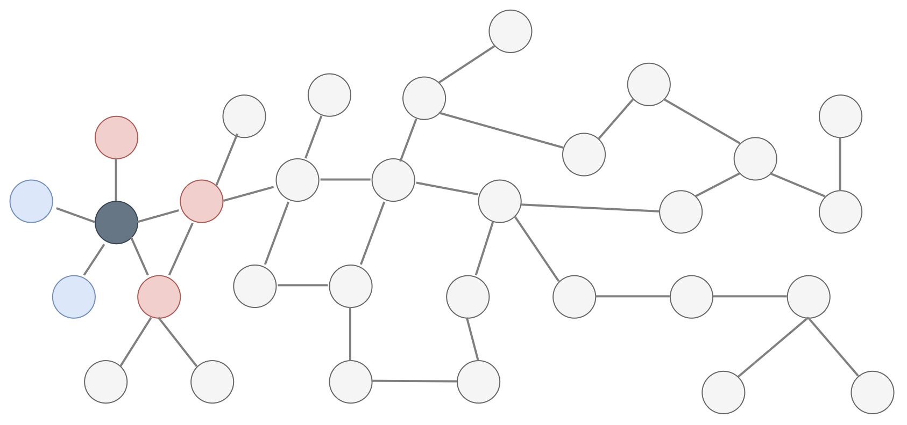
"Red" is the majority from the sample
Adopt the majority color, "red"
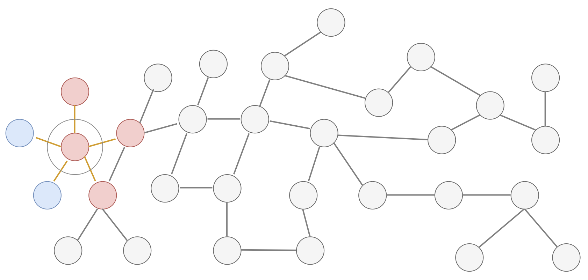
Repeat this random sampling in parallel, in all nodes
Repeated random sampling perturbs conflicting state
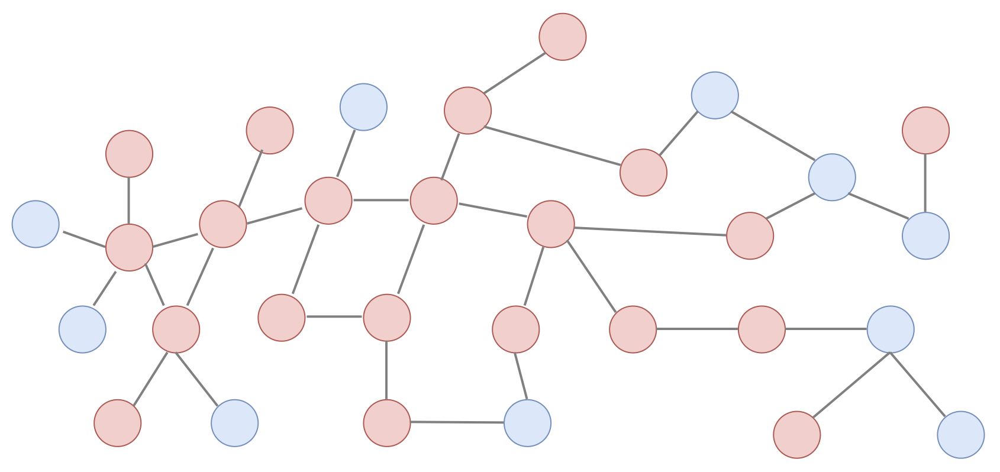
Sequence of metastable process of random sampling
All converge to the same value (agreement)
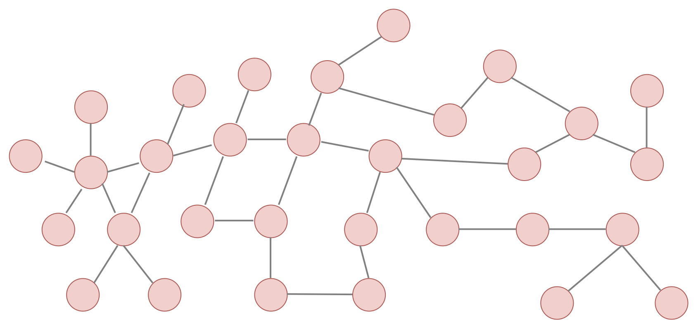
Avalanche Subnet 🔺
What is Subnet?
Primary Network == Special Subnet
- X-chain runs on DAG, used for exchanging assets
- P-chain coordinates validators and subnets
- C-chain executes EVM contracts with ETH RPCs
Subnet validator must validate primary network!
Subnet (sub-network)
Custom networks running on Avalanche
- Security: Choose who and how many can participate
- Compliance: Comply with specific industry, jurisdiction, regulatory environment
- Custom Execution: Common VM (subnet-evm with custom gas token), custom VM
optimized for own use case (key-value store, gaming)
- Privacy: Controls data visibility (encryption)
Effects of Subnet
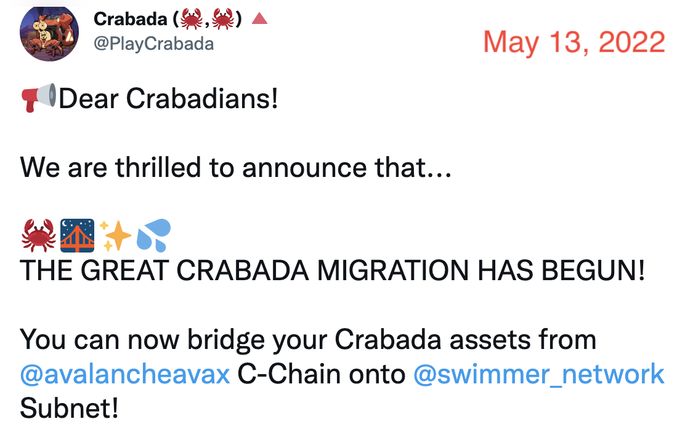
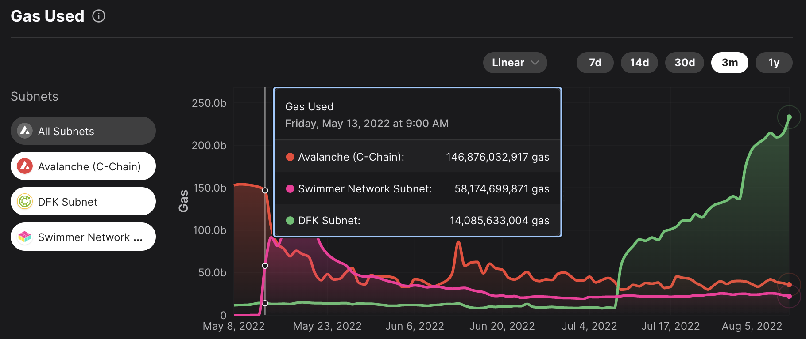
Avalanche node infrastructure
Requirements for an Avalanche validator
To be an Avalanche validator...
- Virtual machine (AMD/ARM 64, 8 CPU + 16 GiB RAM)
- Dedicated disk/volume (SSD, 1 TiB)
- Staking certificate (X.509 certificate)
- Health checks
- Logging
- Metrics
- (Optional) Static IP
Avalanche validator security
- Staking certificate maps to a unique Node ID
- Only one Node ID can be connected to network
- Two nodes can't join network with same Node ID
- DO NOT SHARE your staking certificate
- DO NOT SHARE your Node ID
- Your signing key DOES NOT live in the node
- HTTP port open to internet for serving API
- Staking port open to internet for p2p network
Set up Avalanche node
Requirements for Day-1
Case #1. Create isolated network
- Entirely self-contained stack
- No production state dependency
- Useful for private testing/experiments
- Requires seed anchor and non-anchor nodes
- Anchor nodes must be bootstrapped first
- Non-anchor nodes later join anchor nodes
- Genesis can be generated from anchor nodes
- Requires control plane to coordinate peer discovery
Case #1. Create isolated network
Example implementation in avalanche-ops
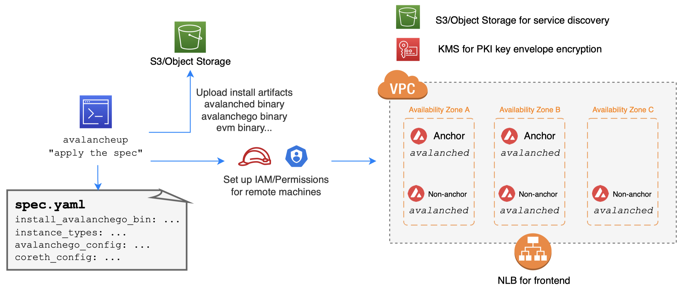
avalancheup is control plane, avalanched is daemon
Case #2. Join public test network
- No need to set up seed anchor nodes
- Just connect to well-established seed anchor nodes
- Actively used by many applications (staging)
- Closely simulate main network (multi-tenant)
- Provides built-in subnet
explorer
integration
- Request funds from faucet for test
transactions
- Take a few hours for initial state sync
Case #2. Join public test network
Example implementation in avalanche-ops
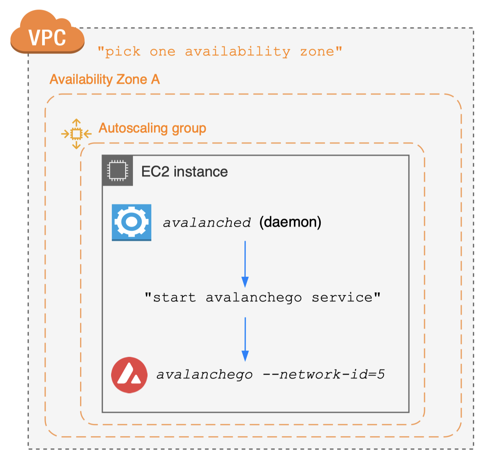
Case #3. Join public main network
- No need to set up seed anchor nodes
- Just connect to well-established seed anchor nodes
Example implementation in avalanche-ops
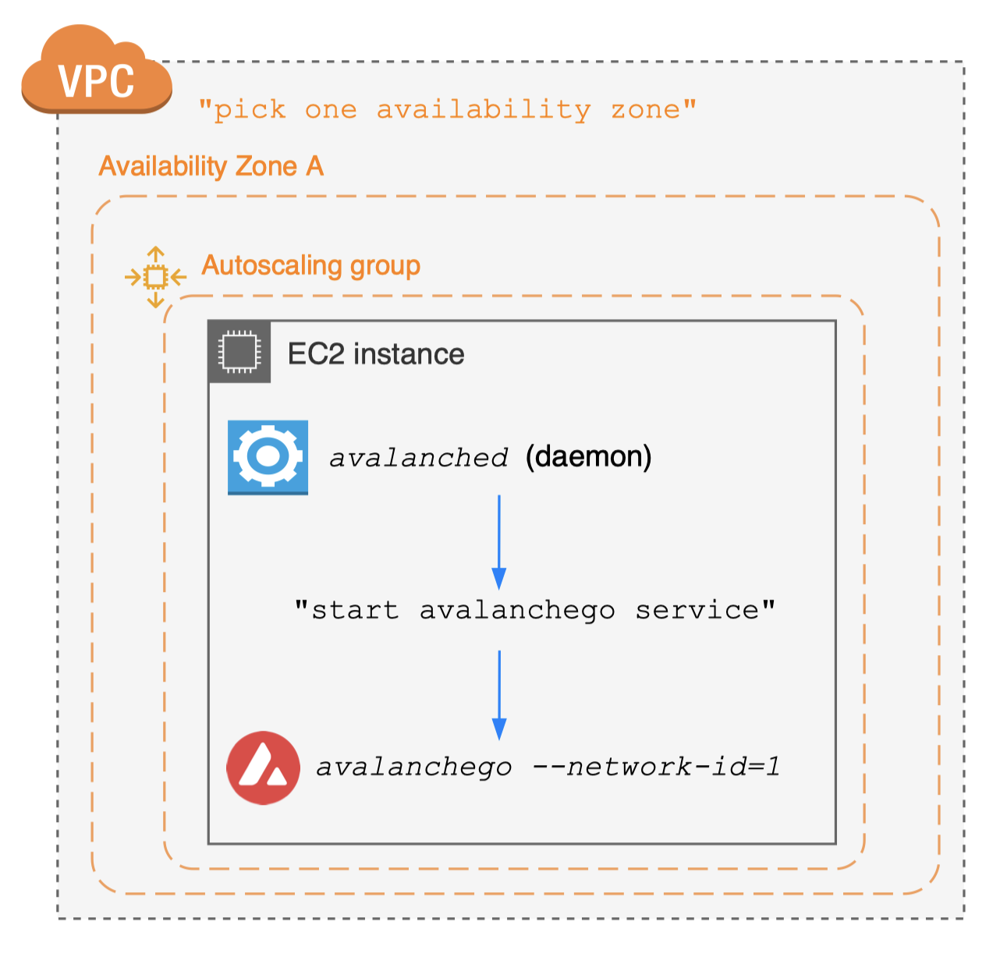
Node provisioning best practices
- Encrypt staking certificate for backups
- Static EBS volume creation
- Map a node and its state to an availability zone
- Do not use ephemeral instance storage
- Provision a separate EBS volume (cheaper)
- On EC2 termination, let EBS volume be detached
- Do not delete the EBS volume (reuse it)
Node provisioning: avalanche-ops
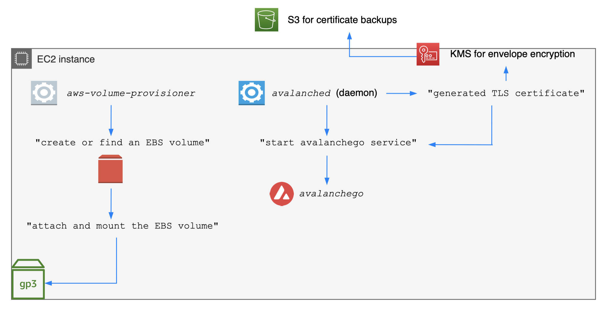
Node provisioning: avalanche-ops
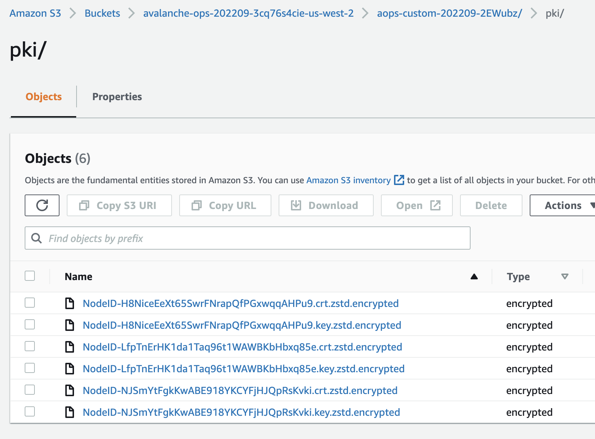
Node provisioning: avalanche-ops
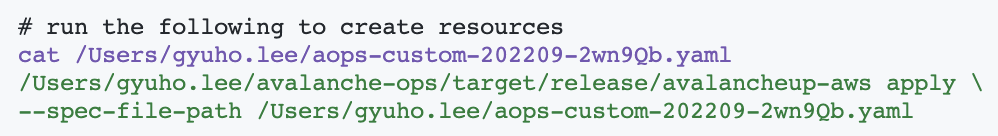
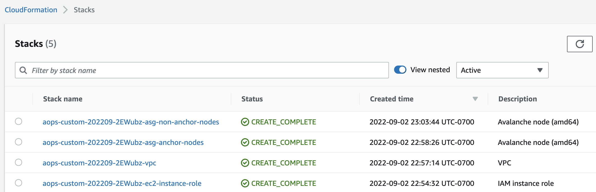
Operate Avalanche node
Requirements for Day-2
Node operation best practices
- Reuse static EBS volume
- Reuse the detached EBS volume
- Useful when running Spot instance
- Reload the chain state for faster bootstrapping
- Reuse the staking certificate for maximum uptime
- avalanche-ops remaps
available volumes (reuse)
- Monitor critical metrics
Node operation: avalanche-ops
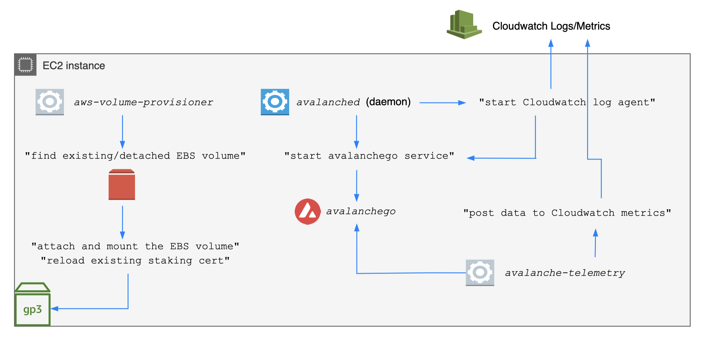
Node operation: avalanche-ops
Define scrape rules with regex
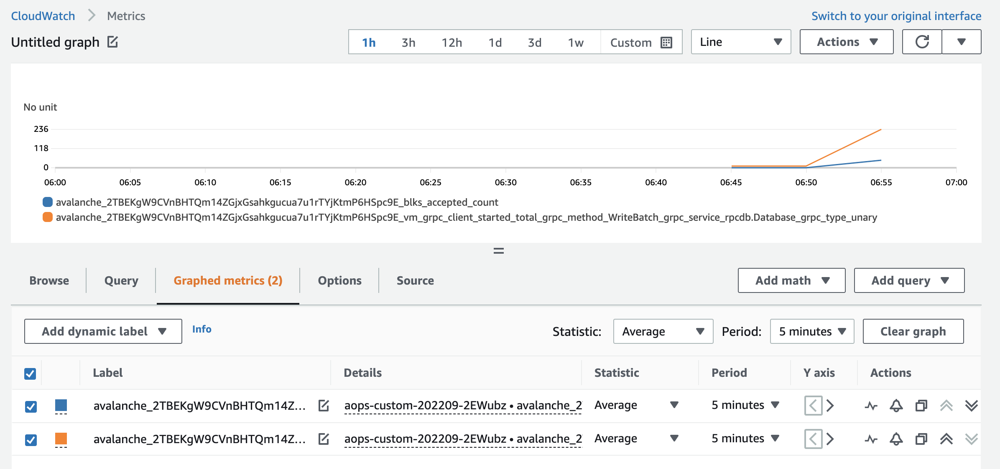
Kubernetes (EKS) vs. avalanche-ops
- avalanche-ops is a command-line interface
- avalanche-ops is a self-service tool
- avalanche-ops does not to replace K8s-based infra
- Kubernetes makes sense iff you manage >100 nodes
- If you run a node as a hobby, K8s is overkill/costly
- Container-based stateful application is still early
- With K8s, you may face some issues with CSI
driver
- "volume's been terminating for hours"
Extending avalanche-ops
- avalanche-ops is a command-line interface
- Uses AWS Cloudformation for resource creation
- avalanched agent is downloaded in the user script
- Can be easily integrated with other tools
CDK with avalanche-ops
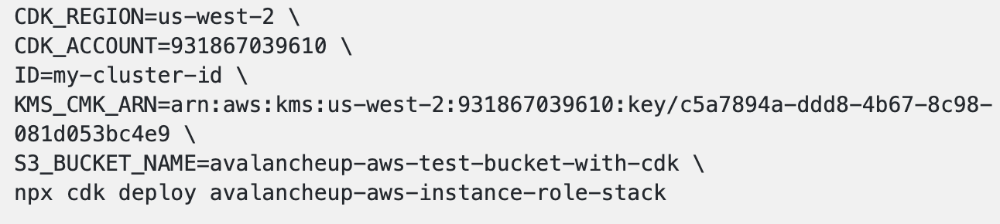
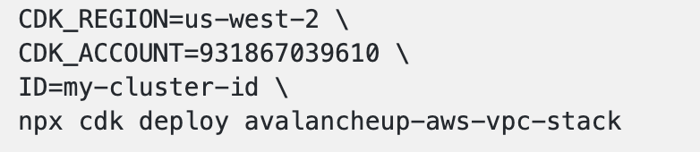
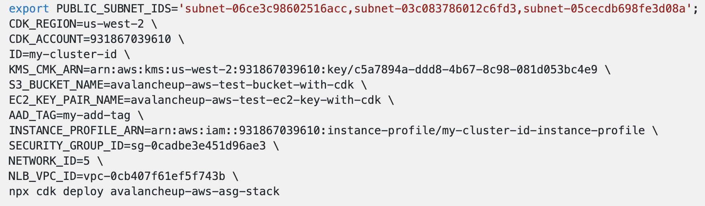
CDK with avalanche-ops
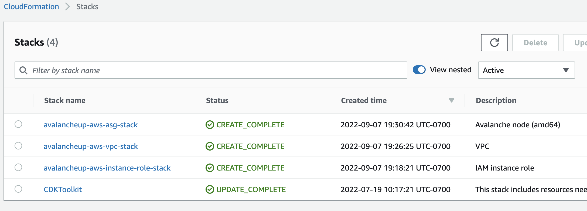
Contributions
- Explained why Avalanche blockchain is special
- Avalanche consensus achieves sub-second finality
- Identified AWS infrastructure components for running an Avalanche validator
- Showed AWS best practices to keep your Avalanche node safe and reliable
- Introduced avalanche-ops that can launch a node with a single command, in most cost-effective
way
- Proposed future integration paths with CDK and avalanche-cli